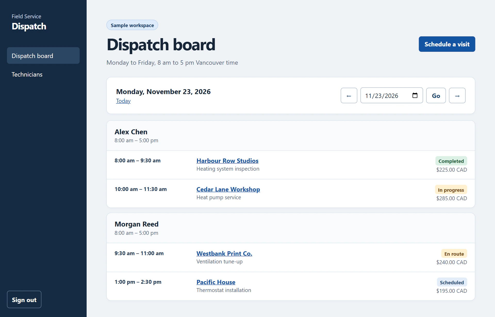
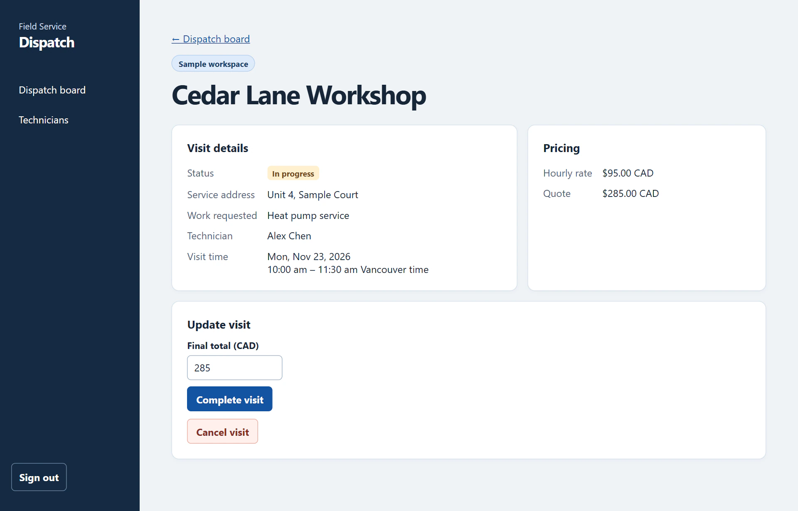

Scheduling & operations / Case study
Field Service Dispatch.
A scheduling portal for Vancouver service teams that follows a visit from its first quote to the technician’s final total.

Implementation
Engineering notes.
Fitting work into a shift
Dispatchers schedule visits against technician availability. The booking form catches an overlapping appointment and keeps the details in place so the dispatcher can choose another time.
Following a visit
A visit moves from scheduled to en route, in progress, and completed. A dispatcher can reassign scheduled work, and cancelling a visit releases the time slot.
Preserving the quote
The final total starts at the quoted amount and can be adjusted at completion. An hourly rate change on the roster preserves the rate already recorded against a visit.
